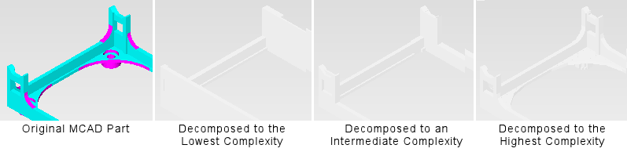

This is a high-level
one-step approach for decomposing the geometry into Simcenter Flotherm objects.
Procedure
- Optionally,
select a Part then click the Decompose icon or choose to
open the Decompose dialog box.
- Use the dialog box to simplify
and dissect the selected MCAD Body or Part into Simcenter Flotherm objects according to the tolerances
you define. If nothing is selected, then the entire MCAD Assembly
is decomposed.
Results
Figure 1 to illustrates the effect of applying
different levels of decomposition. In this example, the number of
primitives created by the decompose process was 26, 87 and 247 respectively.
Figure 1. Varying the Level of
Decompose Complexity
If this method does not give the desired
result, then try splitting the body.